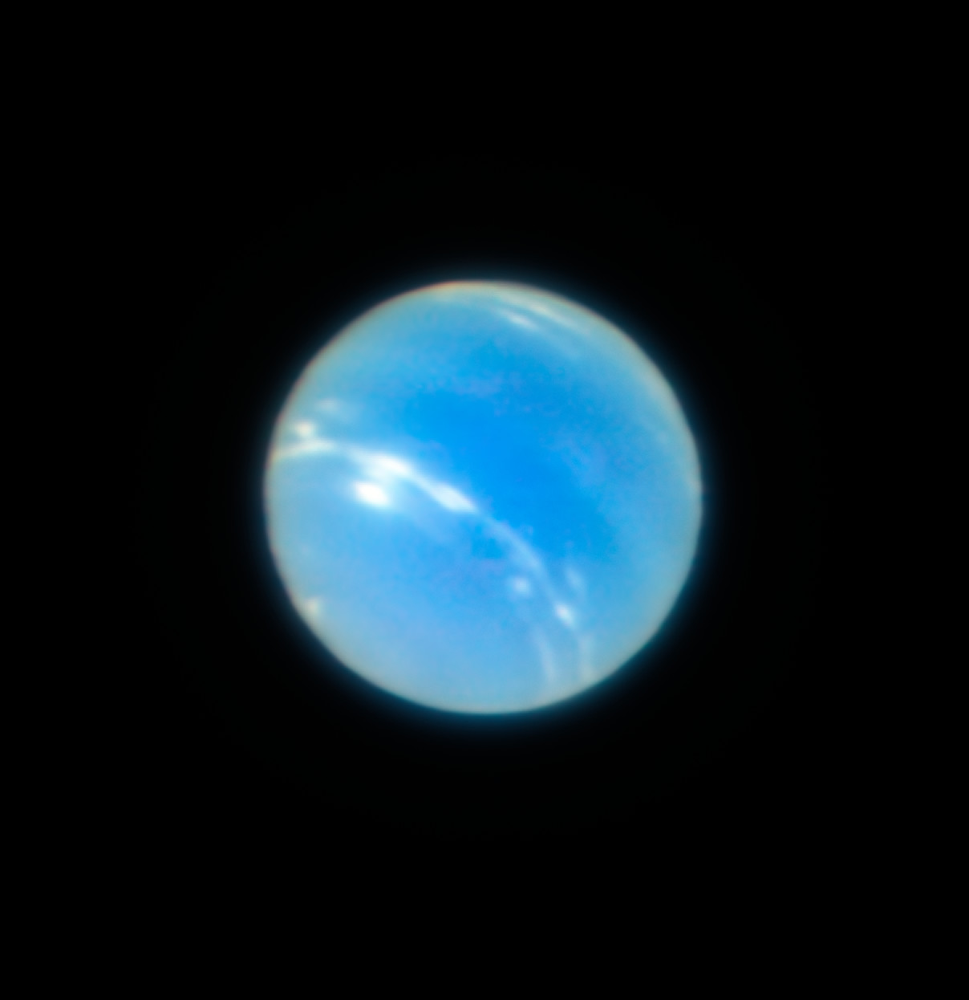

«Искусственные звезды» позволили получить исключительно четкий снимок Нептуна.
Новая техника дает возможность астрономам изучать с беспрецедентными подробностями такие объекты, как сверхмассивные черные дыры, сверхновые, а также планеты и их спутники в Солнечной системе. Дальше